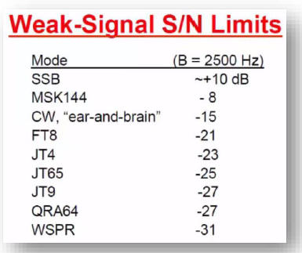

[
Date Prev
][
Date Next
][
Thread Prev
][
Thread Next
][
Date Index
][
Thread Index
]
Re: [NCDXC Chat] FT8 Operating Guide Weak signal HF DXing for technophiles
To
: "Richard (Rick) Karlquist" <
richard@karlquist.com
>
Subject
: Re: [NCDXC Chat] FT8 Operating Guide Weak signal HF DXing for technophiles
From
: Hank Garretson <
w6sx@arrl.net
>
Date
: Wed, 24 Jul 2019 16:44:24 -0700
Cc
: "Bruce M. Croskey" <
bruce@croskey.org
>, DTucker423 <
dtucker423@frontier.com
>, NCDXC Discussion List <
chat@ncdxc.org
>
In-reply-to
: <
9d9dd543-aafe-d127-4178-fc57813c3e58@karlquist.com
>
List-archive
: <
http://mail.ncdxc.org/mailman/private/chat_ncdxc.org/
>
List-help
: <
mailto:chat-request@ncdxc.org?subject=help
>
List-id
: NCDXC Discussion List <chat.ncdxc.org>
List-post
: <
mailto:chat@ncdxc.org
>
List-subscribe
: <
http://mail.ncdxc.org/mailman/listinfo/chat_ncdxc.org
>, <
mailto:chat-request@ncdxc.org?subject=subscribe
>
List-unsubscribe
: <
http://mail.ncdxc.org/mailman/options/chat_ncdxc.org
>, <
mailto:chat-request@ncdxc.org?subject=unsubscribe
>
References
: <
i330bn4bt78a7393jlqr6uvp.1563740788751@email.lge.com
> <
b036a229-e7f2-228a-0cac-60dda5018e28@karlquist.com
> <
126023983.943758.1563754685844@connect.xfinity.com
> <
86BF1CF6-6F03-4E3A-AA30-CAFBC8551D4B@frontier.com
> <009e01d541e0$c827f800$5877e800$@comcast.net> <006301d5426e$459cd700$d0d68500$@earthlink.net> <
00ee2f1e-08f1-6b85-eb61-f4bcf53e1a2b@karlquist.com
> <
FAA4E07C-44CC-4AE1-BBCB-20A0E8AD04B2@croskey.org
> <
9d9dd543-aafe-d127-4178-fc57813c3e58@karlquist.com
>
On Wed, Jul 24, 2019 at 4:38 PM Richard (Rick) Karlquist via Chat <
chat@ncdxc.org
> wrote:
I was just going by the document that was posted to this list.
Rick N6RK

From page 10 of FT8 Operating Guide.
73,
Hank, W6SX
References
:
Re: [NCDXC Chat] FT8 Operating Guide Weak signal HF DXing for technophiles
From:
"jerryolive@comcast.net" <jerryolive@comcast.net>
Re: [NCDXC Chat] FT8 Operating Guide Weak signal HF DXing for technophiles
From:
"Richard (Rick) Karlquist" <richard@karlquist.com>
Re: [NCDXC Chat] FT8 Operating Guide Weak signal HF DXing for technophiles
From:
N6TA <six2go@comcast.net>
Re: [NCDXC Chat] FT8 Operating Guide Weak signal HF DXing for technophiles
From:
DTucker423 <dtucker423@frontier.com>
Re: [NCDXC Chat] FT8 Operating Guide Weak signal HF DXing for technophiles
From:
"AL_N6TA" <six2go@comcast.net>
Re: [NCDXC Chat] FT8 Operating Guide Weak signal HF DXing for technophiles
From:
<n6sj@earthlink.net>
Re: [NCDXC Chat] FT8 Operating Guide Weak signal HF DXing for technophiles
From:
"Richard (Rick) Karlquist" <richard@karlquist.com>
Re: [NCDXC Chat] FT8 Operating Guide Weak signal HF DXing for technophiles
From:
"Bruce M. Croskey" <bruce@croskey.org>
Re: [NCDXC Chat] FT8 Operating Guide Weak signal HF DXing for technophiles
From:
"Richard (Rick) Karlquist" <richard@karlquist.com>
Prev by Date:
Re: [NCDXC Chat] FT8 Operating Guide Weak signal HF DXing for technophiles
Next by Date:
Re: [NCDXC Chat] FT8 Operating Guide Weak signal HF DXing for technophiles
Previous by thread:
Re: [NCDXC Chat] FT8 Operating Guide Weak signal HF DXing for technophiles
Next by thread:
Re: [NCDXC Chat] FT8 Operating Guide Weak signal HF DXing for technophiles
Index(es):
Date
Thread